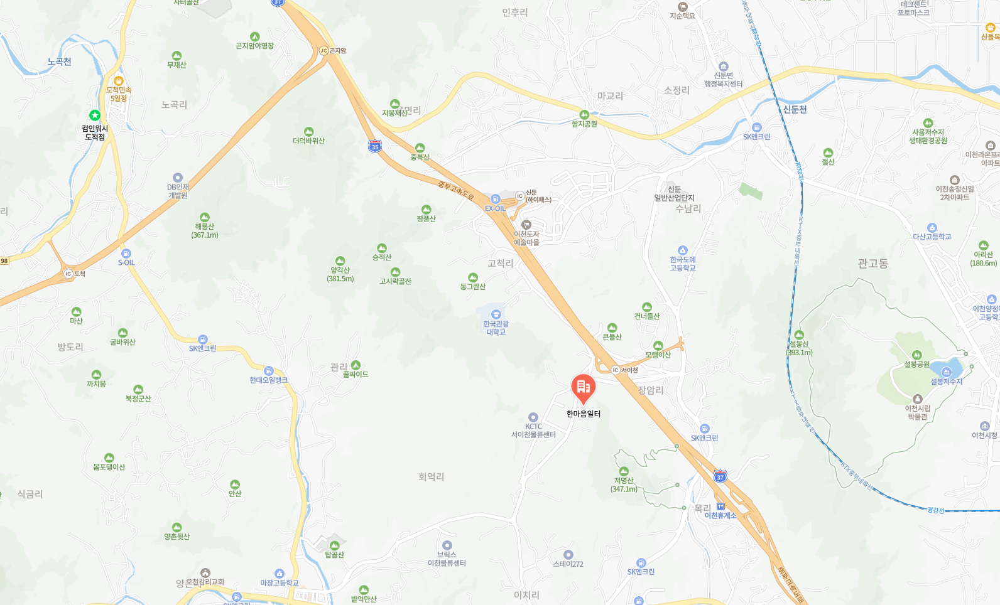

장애인의 자립과 사회 참여를 돕는 직업재활시설.
따뜻한 손길로 정성껏 만드는 인쇄·홍보물·임가공.
GREETING
한마음일터는 지역사회 장애인의 일자리 창출과
행복을 원조 합니다.
고품질 인쇄물과 복지 마인드로 고객에게 보답합니다.
안녕하십니까. 장애인직업재활시설 한마음일터를 찾아주셔서 진심으로 감사드립니다.
저희 한마음일터는 장애인의 자립과 사회 참여를 돕고자 설립된 직업재활시설로, 인쇄·현수막·쇼핑백 등 다양한 인쇄물 제작과 임가공 사업을 통해 이용 장애인분들께 안정적인 일자리와 직업 훈련의 기회를 제공하고 있습니다.
한 분 한 분이 자신의 능력을 발견하고 사회의 당당한 구성원으로 성장할 수 있도록 최선을 다하겠습니다. 저희를 믿고 일감을 맡겨 주시는 모든 분들께 감사드리며, 앞으로도 정성껏 보답하는 한마음일터가 되겠습니다.
PURPOSE & HISTORY
장애인의 직업재활과 자립을 통한 사회 참여 실현 — 이것이 한마음일터의 변하지 않는 목적입니다.
2026
홈페이지 리뉴얼 · 온라인 견적·주문 시스템 도입
2023
장애인직업재활시설 평가 최우수기관 선정
종이재단기 구입
2022
제2작업장(누리봄) 준공
2021
04 · 이병환 원장 취임
6컬러 오프셋 대국전 UV인쇄기 설치
2019
경기도 장애인직업재활시설 평가 최우수기관 선정
디지털 인쇄기 구입
2018
접지기 구입
2017
04 · 다원학교와 산학협약식 체결
무선제본기 구입(6콤머 한성)
KDB 나눔재단 현수막 출력기 설치
2016
07 · 원준호 원장 취임
도무송 2호기 설치
클린사업장 선정 (한국산업안전보건공단)
2015
08 · 박진효 원장 취임
2014
사회복지시설평가 우수(A)
UV코팅기계 설치 · 조리실 조성
2013
10 · 권대관 원장 취임
도무송 장비 설치
2012
2층 작업장 증축 (639.24㎡)
2011
ISO9001 품질경영 시스템 인증
디지털 인쇄기(컬러·흑백) · 중철기 · 현수막 출력기 · 명함 재단기 설치
2010
중증장애인생산품 생산시설 지정
장애인생산품 인증
산학협력 체결 (경복대학 · 대원대학)
2009
이천시정신보건센터와 자매결연 협약
2008
옵셋 인쇄기 설치
(주)팬콤과 MOU 체결 (GS25 홍보물 제작·납품)
2007
01 · 재가 장애인 출·퇴근차량 운행
11 · (주)빅프로덕트코리아와 협력 제휴 (볼펜·라이터 등)
2006
02 · 지역주민 초청 무료검진 실시
03 · 친환경용품(EM활성액 · EM비누 · EM가루비누) 생산
2005
01 · 지역재가봉사활동 시작
09 · 지역주민과 함께하는 '가을밤의 음악회' 개최
12 · (주)대산케미텍(일본수출업체)와 OEM 계약 체결
2004
01 · 원준호 원장 취임
08 · 신축 작업장(594㎡) 완공
2003
05 · 직업재활기금사업 수행기관 선정
2002
04 · 유석영 원장 취임
2001
11 · 한마음일터 개원 (이용 정원 30명)
3M본드 및 임가공 포장 실시
1999
사회복지법인 엘리엘동산 설립인가
FACILITY OVERVIEW
| 시설명 | 장애인직업재활시설 한마음일터 |
|---|---|
| 법인 | 사회복지법인 엘리엘동산 |
| 시설 유형 | 장애인 보호작업장 |
| 대표자 | 이병환 |
| 설립연도 | 2001년 11월 14일 |
| 소재지 | 경기도 이천시 마장면 이장로 256번길 한마음일터 |
| 대표전화 | 031-631-6680 |
| 팩스 | 031-631-6634 |
| 사업자등록번호 | 126-82-10484 |
| 주요사업 | 칼라인쇄 · 카탈로그 · 리플렛 · 전단지 · 명함 · 현수막 · 쇼핑백 · 임가공 |
| 이용 정원 · 현원 | 정원 40명 · 현원 40명 |
| 이용 대상 | 18세 이상의 장애인 |
| 시설 면적 | 총 798.21㎡ |
| 내부 구성 | 작업장 216㎡ · 프로그램실 47.3㎡ · 상담실 15.8㎡ · 휴게실 61㎡ · 사무실 72㎡ · 샤워실 31.5㎡ |
| 운영시간 | 평일 09:00 ~ 18:00 (점심 12:00 ~ 13:00, 주말·공휴일 휴무) |
VOCATIONAL REHABILITATION
장애인 한 분 한 분이 자신의 능력을 발견하고 사회 구성원으로 자리매김할 수 있도록 체계적인 직업 평가·훈련·고용 지원을 제공합니다.
「장애인 고용촉진 및 직업재활법」 개정에 따라 모든 장애인에게 직업재활 서비스를 제공하는 사업으로, 본 시설은 직업적응훈련을 중점으로 수행하고 있습니다.
USAGE PROCESS
한마음일터의 직업재활 서비스를 이용하시려면 아래 절차를 따라주세요. 문의는 언제든 환영합니다.
전화 또는 방문으로 사전 상담을 진행합니다.
장애인 등록증, 신청서 등 필요 서류를 제출합니다.
적성·능력 평가를 통해 적합한 직무를 파악합니다.
평가 결과를 바탕으로 이용 여부 및 배치를 결정합니다.
작업장 환경 적응 및 기초 직무 훈련을 받습니다.
맡은 업무를 수행하며 임금을 받습니다.
💡 이용 신청·문의는 전화 031-631-6680 또는 방문 상담으로 가능합니다.
찾아오시는 길 →ORGANIZATION
운영위원회
노사협의회
인사위원회
징계위원회
고충처리위원회
LOCATION
한마음일터에 방문해 주시면 따뜻하게 맞이하겠습니다. 상담·견적·시설 견학 모두 환영합니다.

031-631-6680
팩스 · 031-631-6634
이메일 · onemind6680@daum.net
평일 09:00 ~ 18:00
점심시간 12:00 ~ 13:00
주말·공휴일 휴무 · 상담 후 방문 권장